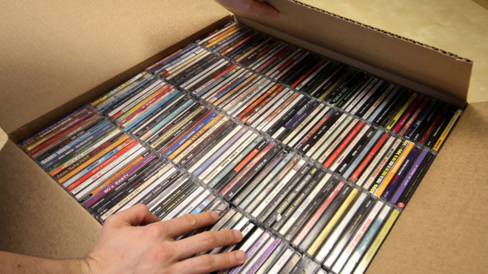

Sports
I love sports. Almost more than myself honestly. They are my entertainment others may like shows and reality tv but me I can watch soccer, football and maybe even some basketball all day. I am a sky blue and support Manchester City in the soccer realm and a huge Tom Brady fan in the football realm. I also enjoy boxing, basketball, fencing, and esports.

Music Collecting CD specific
I have an extreme passion to music to the point I have a habit of collecting physical copies. I try and stay to disks as they are more cheap and easier to handle. Also I can enjoy them in the car. Anyway I have a wide collection upwards of twenty disks right now. With Prince and Kanye being my most reoccuring.
